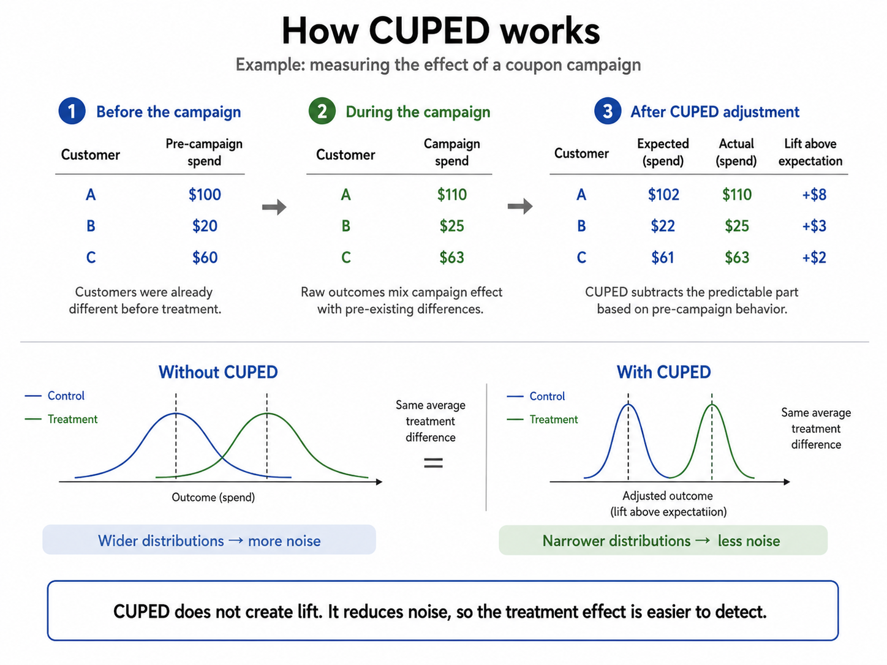

3.2 A/B-Test-Design
Über die deutsche Ausgabe
Diese Seite ist eine KI-Übersetzung der englischen Ausgabe von Marketing Science in Python. Die englische Ausgabe ist maßgeblich und hat bei Abweichungen Vorrang. Code, Notebooks und Text in Abbildungen bleiben auf Englisch. Englische Ausgabe lesen
Ihr Team hat gerade einen zweiwöchigen A/B-Test für die neue Checkout-Seite abgeschlossen. Alle warten gespannt auf die Ergebnisse. Dann kommen die Zahlen:
| Variante | Nutzer | Conversions | CVR |
|---|---|---|---|
| Kontrolle | 5,000 | 115 | 2.30% |
| Treatment | 5,000 | 127 | 2.54% |
Das Treatment sieht etwas besser aus, ein Lift von 0.24 Punkten. Aber ein z-Test für zwei Anteile ergibt einen p-Wert von 0.43:
import numpy as np
from statsmodels.stats.proportion import proportions_ztest
conversions = np.array([127, 115]) # treatment, control
users = np.array([5000, 5000])
stat, p_value = proportions_ztest(conversions, users, alternative="two-sided")
print(f"p-value: {p_value:.2f}") # 0.43Also sagt das Team: „Nicht signifikant. Das Redesign funktioniert nicht. Weiter geht’s.“ Diese Schlussfolgerung wird von den Daten nicht gestützt. Ein p-Wert von 0.43 bedeutet nicht, dass es keinen Effekt gibt. Er bedeutet, dass der Test einen kleinen Effekt nicht von zufälligem Rauschen trennen konnte. Das Treatment könnte wirklich besser sein; die Daten können es nur nicht sagen. Der Unterschied zwischen „kein Effekt“ und „wir können es nicht sagen“ hängt davon ab, ob der Test genug Power hatte.
Statistische Power
Die statistische Power (Teststärke) ist die Wahrscheinlichkeit, dass Ihr Test einen Effekt einer bestimmten Größe erkennt, wenn dieser Effekt tatsächlich existiert. Die meisten Teams streben 80% Power an, was immer noch eine Wahrscheinlichkeit von 20% lässt, einen Effekt dieser Größe zu übersehen.
Stellen Sie sich vor, Sie wiederholen denselben A/B-Test viele Male. Wenn das Redesign keinen echten Effekt hat, schwankt der geschätzte Lift um null. Wenn das Redesign die Conversion wirklich verbessert, schwankt der geschätzte Lift um den echten Lift. Die Power ist die Wahrscheinlichkeit, dass der Test weit genug von null entfernt landet, damit wir diesen Effekt erkennen.

Bei einem Ereignis mit niedriger Conversion wie einem Kauf (sagen wir einer Conversion-Rate von 2%) braucht es viele Tausend Nutzer pro Gruppe, um einen Lift von 0.5 Punkten zu erkennen, und die meisten Teams arbeiten mit weit weniger. Das ist der Teil, den die meisten Teams unterschätzen: Kleine Lifts zu erkennen erfordert in der Regel deutlich mehr Traffic, als die Intuition vermuten lässt.
Berechnung der Stichprobengröße
Wie viele Nutzer brauchen Sie also tatsächlich? Die Dimensionierung eines Tests erfordert vier Eingaben: die Baseline-Conversion-Rate, den kleinsten Lift, der es wert ist, erkannt zu werden (den MDE), die Falsch-Positiv-Rate, die Sie tolerieren (\(\alpha\), üblicherweise 0.05), und die gewünschte Power (\(1 - \beta\), üblicherweise 0.80).
Die zentrale Intuition lautet:
\[n \propto \frac{1}{\text{MDE}^2}\]
Wenn Sie den halben Lift erkennen wollen, brauchen Sie ungefähr viermal so viele Nutzer. In Python:
from statsmodels.stats.power import NormalIndPower
from statsmodels.stats.proportion import proportion_effectsize
baseline_cvr = 0.02
target_cvr = 0.025
effect_size = abs(proportion_effectsize(target_cvr, baseline_cvr))
analysis = NormalIndPower()
required_n = analysis.solve_power(
effect_size=effect_size,
alpha=0.05,
power=0.80,
ratio=1,
alternative="two-sided",
)
print(f"Required sample size per group: {required_n:.0f}") # ~13,800Um einen Lift von einer Baseline von 2% auf 2.5% zu erkennen, braucht es etwa 13,800 Nutzer pro Gruppe. In der Praxis runden Teams auf und planen einen Puffer für Tracking-Verluste und ausgeschlossene Nutzer ein, sodass sie mit ungefähr 15,000 rechnen würden.

Die Kurve macht die Hauptlektion sichtbar: Die Stichprobengröße wächst nicht linear, sondern steigt steil an, wenn der angestrebte Lift kleiner wird. Deshalb sind kleine Verbesserungen bei Metriken mit niedriger Conversion teuer zu messen.
Entscheiden Sie vor dem Start
Halten Sie vor dem Start des Tests vier Entscheidungen schriftlich fest:
- Primäre Metrik: Welche Metrik entscheidet den Test?
- MDE: Welcher Lift ist groß genug, um relevant zu sein?
- Stichprobengröße und Laufzeit: Wie viele Daten sammeln Sie, bevor Sie das Ergebnis beurteilen?
- Guardrail-Metriken: Was darf sich nicht verschlechtern (Umsatz pro Nutzer, Seitenladezeit, Support-Tickets)?
Diese Punkte vorab festzuhalten schützt vor zwei Gewohnheiten, die die Falsch-Positiv-Rate unbemerkt in die Höhe treiben: Peeking (den Test in dem Moment zu stoppen, in dem er signifikant aussieht) und Metric Fishing (diejenige von vielen Metriken zu berichten, die sich zufällig bewegt hat).
CUPED: Mehr Präzision aus derselben Stichprobe
Wenn die erforderliche Stichprobe außer Reichweite ist, können Sie nicht immer mehr Nutzer, Filialen oder Märkte hinzufügen. CUPED (kurz für Controlled-experiment Using Pre-Experiment Data) kann Ihnen manchmal mehr Präzision aus denselben Daten liefern, indem es Informationen aus der Zeit vor dem Experiment nutzt. Das Experimentation-Team von Microsoft führte es 2013 ein, um Online-Experimente sensitiver zu machen, ohne mehr Daten zu sammeln (Deng u. a. 2013), und seither ist es ein Standardwerkzeug zur Varianzreduktion in der Experimentation im großen Maßstab.
Die Idee ist einfach. Wenn ein Kunde schon vor dem Experiment viel ausgegeben hat, wird er wahrscheinlich auch während des Experiments weiter viel ausgeben, mit oder ohne Treatment. CUPED zieht diesen vorhersagbaren Teil des Ergebnisses ab, sodass sich der Vergleich auf das konzentriert, was sich während des Tests tatsächlich verändert hat.

In der Abbildung hat Kunde A vor der Kampagne $100 ausgegeben und während der Kampagne $110. Angesichts dieser Historie würde man etwa $102 erwarten, sodass der Lift über die Erwartung hinaus nur $8 beträgt, nicht die vollen $110. Das Herausrechnen der vorhersagbaren Ausgaben jedes Kunden verengt die Streuung der Ergebnisse, ohne den durchschnittlichen Treatment-Effekt zu verändern, sodass der Effekt leichter zu erkennen ist.
Dieselbe Idee hilft bei Experimenten auf Filial- oder Marktebene. Angenommen, ein Händler möchte eine Promotion im Laden testen. Hunderte Filialen zufällig in Treatment und Kontrolle aufzuteilen kann operativ unrealistisch sein, und jede Filiale ist anders: Manche sind größer, manche haben einen anderen Kundenstamm, manche werden von lokalen Ereignissen getroffen. CUPED kann die Umsätze jeder Filiale aus der Zeit vor dem Experiment nutzen, um einen Teil dieser vorhersagbaren Variation zwischen den Filialen zu entfernen. Es erzeugt keine zusätzlichen Filialen und repariert kein schwaches Design, aber wenn die Umsätze der Vorperiode die Umsätze während des Tests stark vorhersagen, kann es einen kleineren Filialtest präziser machen.
Formal sei \(Y\) das Ergebnis und \(X\) eine Kovariate aus der Zeit vor dem Experiment (z. B. Käufe in den vorangegangenen 30 Tagen). Das bereinigte Ergebnis ist:
\[Y_{\text{CUPED}} = Y - \theta \cdot (X - \bar{X})\]
wobei \(\theta = \text{Cov}(Y, X) / \text{Var}(X)\). Die Varianz des bereinigten Ergebnisses reduziert sich auf \(\text{Var}(Y_{\text{CUPED}}) = \text{Var}(Y)(1 - \rho^2)\), wobei \(\rho\) die Pearson-Korrelation zwischen \(X\) und \(Y\) ist. Bei \(\rho = 0.7\) entfernt CUPED etwa die Hälfte der Varianz, so viel Präzision, wie eine Verdopplung der Stichprobe bringen würde. Netflix veröffentlichte später Fallstudien, die ähnliche Varianzreduktionen in seinen Online-Experimenten im großen Maßstab berichten (Xie und Aurisset 2016). Die häufigste Kovariate ist dieselbe Metrik, gemessen in der Periode vor dem Experiment, was in der Regel die stärkste Korrelation liefert.
Im Code ist die Bereinigung nur wenige Zeilen lang. Bei einer simulierten Kampagne, in der die Ausgaben der Vorperiode mit den Ausgaben während des Experiments etwa mit 0.75 korrelieren, verringert sie den Standardfehler des Lifts um etwa ein Drittel:
import numpy as np
# df: one row per customer — pre_spend (prior 30 days), campaign_spend, treatment (0/1)
theta = np.cov(df["campaign_spend"], df["pre_spend"])[0, 1] / df["pre_spend"].var()
df["cuped_spend"] = df["campaign_spend"] - theta * (
df["pre_spend"] - df["pre_spend"].mean()
)
for metric in ["campaign_spend", "cuped_spend"]:
t = df.loc[df["treatment"] == 1, metric]
c = df.loc[df["treatment"] == 0, metric]
se = np.sqrt(t.var() / len(t) + c.var() / len(c))
print(f"{metric:15s} lift={t.mean() - c.mean():.2f} SE={se:.3f}")
# campaign_spend lift=0.97 SE=0.549
# cuped_spend lift=1.07 SE=0.364 (33.7% smaller SE — like a much bigger sample)Die Punktschätzung verschiebt sich leicht (0.97 → 1.07): CUPED entfernt den Teil des rohen Abstands, der durch ein zufälliges Ungleichgewicht zwischen den Gruppen in der Vorperiode entstanden ist, sodass es weiterhin auf denselben wahren Effekt zielt, während sich das Intervall verengt. Das Begleit-Notebook simuliert df von Anfang bis Ende (und berichtet p-Werte, die hier von 0.08 auf 0.003 fallen), sodass Sie die Korrelation ändern und beobachten können, wie der Präzisionsgewinn schrumpft oder wächst.
Wenn ein Test nicht eindeutig ist
Zurück zum Checkout-Test. Die richtige Frage ist nicht „lag der p-Wert unter 0.05?“, sondern „war der Test präzise genug, um einen Effekt auszuschließen, der uns wichtig wäre?“
Sehen Sie sich das Konfidenzintervall an. Der beobachtete Lift betrug +0.24 Punkte, aber das 95%-Intervall reicht von −0.36 bis +0.84 Punkte, weit genug, um sowohl einen kleinen Verlust als auch einen beachtlichen Gewinn einzuschließen. Dieser Test ist nicht eindeutig: Er hat nicht gezeigt, dass das Redesign funktioniert, aber er hat sicher nicht gezeigt, dass es nicht funktioniert. Erst wenn das Intervall eng ist und jeden Lift ausschließt, der einen Rollout wert wäre, können Sie ein Treatment vernünftigerweise beiseitelegen.
Ein nicht signifikantes Ergebnis ist mit anderen Worten nicht automatisch ein gescheitertes Treatment. Es kann schlicht bedeuten, dass der Test zu klein oder zu verrauscht war oder in einer ungewöhnlichen Periode lief.
Begleit-Notebook: sec3.2_ab_test_figures.ipynb reproduziert die Abbildungen zu Stichprobengröße und Power und führt die CUPED-Simulation aus diesem Kapitel aus.
Auf GitHub ansehen
Das Wichtigste in Kürze
- Planen Sie für den Effekt, der es wert ist, erkannt zu werden: Legen Sie primäre Metrik, MDE, Stichprobengröße und Guardrails vor dem Start fest. Die Stichprobengröße skaliert mit \(1/\text{MDE}^2\), der halbe Lift kostet also viermal so viele Nutzer.
- Ein nicht signifikantes Ergebnis ist kein Beleg dafür, dass es keinen Effekt gibt. Beurteilen Sie es anhand des Konfidenzintervalls: Wenn Lifts, die einen Rollout wert wären, noch darin liegen, hat der Test noch keine Antwort gegeben.
- Wenn Sie keinen zusätzlichen Traffic kaufen können, kauft CUPED stattdessen Präzision, indem es mit einer Kovariate aus der Zeit vor dem Experiment Varianz aus dem Vergleich entfernt.